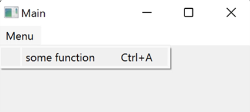

Define Custom Keybindings¶
Keybindings are very useful in many situations, especially when some functions will be called many times. In most cases, you will have to set shortcuts to a push button or an action in the menu so that bound function will be accessible via GUI.
Magic class provides a wrapper function which makes it easy to implement custom Keybindings, and like other wrappers, you don't have to worry about reducing code readability.
How to Define Keybindings¶
All you have to do is to wrap methods with bind_key function. There are several ways to
describe keybindings.
from magicclass import magicclass, Key, bind_key
@magicclass
class Main:
@bind_key("Ctrl-A") # napari-style
def function_1(self):
print(1)
@bind_key("Ctrl", "B") # strings separately
def function_2(self):
print(2)
@bind_key(Key.Ctrl + Key.C) # use Key object
def function_3(self):
print(3)
@bind_key(Key.Ctrl, Key.D) # Key object separately
def function_4(self):
print(4)
Note
If you are going to use magic class as a dock widget in napari, make sure there is no
collision between your keybindings and those in napari.
Decorate Private Functions¶
Although private functions (functions whose names start with "_") will not be converted into widgets, it is very useful to define "invisible" shortcuts. A typical case is when you want to change widget values with shortcut.
from magicclass import magicclass, field, bind_key, do_not_record
@magicclass
class Main:
a = field(int)
@bind_key("Up")
@do_not_record
def _increment(self):
self.a.value = min(self.a.value + 1, self.a.max)
@bind_key("Down")
@do_not_record
def _decrement(self):
self.a.value = max(self.a.value - 1, self.a.min)
Widget defined by this class is equipped with shortcuts that can change the value of a
without clicking the spin box.
Compatibility with Other Features¶
Keybindings are compatible with other functions in magic class.
You can call parent methods by combining with wraps method (see Call Parent Methods from its Child).
from magicclass import magicclass, magicmenu, bind_key
@magicclass
class Main:
@magicmenu
class Menu:
def some_function(self): ...
@Menu.wraps
@bind_key("Ctrl-A")
def some_function(self):
print(self.__class__.__name__) # should be "Main"
In this example, shortcut description appears in the menu.
You can also bind values of fields or other methods (see Binding Values to Arguments).
from magicclass import magicclass, bind_key, field
from magicclass.types import Bound
@magicclass
class Main:
a = field(int)
@bind_key("Ctrl-A")
def print_value(self, a: Bound[a]):
print(a)
Function calls triggered by shortcut are also recorded in macro because triggered event is actually evoked inside Qt.